Proximal Policy Optimization
PPO for stable policy learning
Trust regions and gradients
The policy gradient tells you in which direction of the parameter space \(\theta\) the return is increasing the most.
If you take too big a step in that direction, the new policy might become completely bad (policy collapse).
Once the policy has collapsed, the new samples will all have a small return: the previous progress is lost.
This is especially true when the parameter space has a high curvature, which is the case with deep NN.
Policy collapse
Policy collapse is a huge problem in deep RL: the network starts learning correctly but suddenly collapses to a random agent.
For on-policy methods, all progress is lost: the network has to relearn from scratch, as the new samples will be generated by a bad policy.
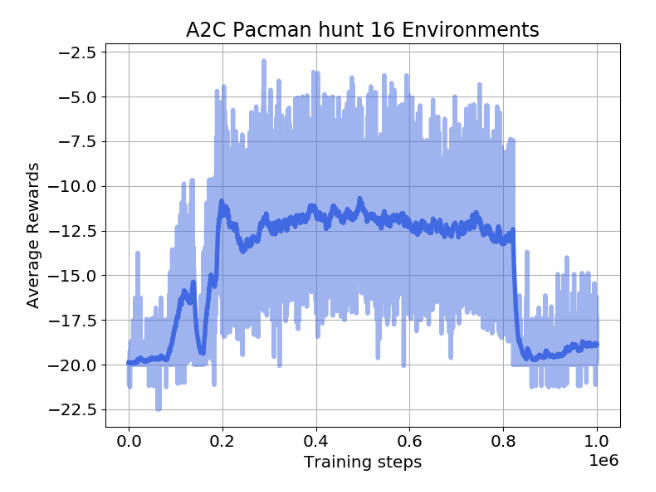
Trust regions and gradients
Trust region optimization searches in the neighborhood of the current parameters \(\theta\) which new value would maximize the return the most.
This is a constrained optimization problem: we still want to maximize the return of the policy, but by keeping the policy as close as possible from its previous value.
Trust regions and gradients
The size of the neighborhood determines the safety of the parameter change.
In safe regions, we can take big steps. In dangerous regions, we have to take small steps.
Problem: how can we estimate the safety of a parameter change?
1 - TRPO: Trust Region Policy Optimization (skipped)
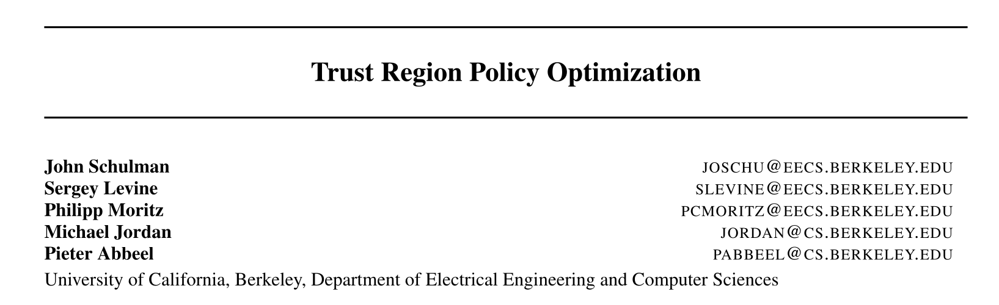
2 - PPO: Proximal Policy Optimization
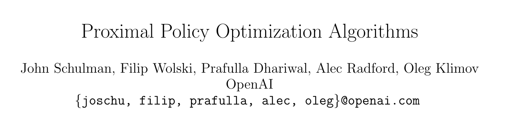
TRPO: Trust Region Policy Optimization
- We want to maximize the expected return of a policy \(\pi_\theta\), which is equivalent to maximizing the Q-value of every state-action pair visited by the policy:
\[\max_\theta \, \mathcal{J}(\theta) = \mathbb{E}_{s \sim \rho_\theta, a \sim \pi_\theta} [Q^{\pi_\theta}(s, a)]\]
Let’s note \(\theta_\text{old}\) the current value of the parameters of the policy \(\pi_{\theta_\text{old}}\).
We search for a new policy \(\pi_\theta\) with parameters \(\theta\) which is always better than the current policy, i.e. where the Q-value of all actions is higher than with the current policy:
\[\max_\theta \, \mathcal{L}(\theta) = \mathbb{E}_{s \sim \rho_\theta, a \sim \pi_\theta} [Q_\theta(s, a) - Q_{\theta_\text{old}}(s, a)]\]
- The quantity
\[A^{\pi_{\theta_\text{old}}}(s, a) = Q_\theta(s, a) - Q_{\theta_\text{old}}(s, a)\]
is the advantage of taking the action \((s, a)\) and thereafter following \(\pi_\theta\), compared to following the current policy \(\pi_{\theta_\text{old}}\).
TRPO: Trust Region Policy Optimization
- If we can estimate the advantages and maximize them, we can find a new policy \(\pi_\theta\) with a higher return than the current one.
\[ \mathcal{L}(\theta) = \mathbb{E}_{s \sim \rho_\theta, a \sim \pi_\theta} [A^{\pi_{\theta_\text{old}}}(s, a)] = \mathbb{E}_{s \sim \rho_\theta, a \sim \pi_\theta} [Q_\theta(s, a) - Q_{\theta_\text{old}}(s, a)] \]
- By definition, \(\mathcal{L}(\theta_\text{old}) = 0\), so the policy maximizing \(\mathcal{L}(\theta)\) has positive advantages and is at least better than \(\pi_{\theta_\text{old}}\).
\[\theta_\text{new} = \text{argmax}_\theta \; \mathcal{L}(\theta) \; \Rightarrow \; \mathcal{J}(\theta_\text{new}) \geq \mathcal{J}(\theta_\text{old})\]
- Maximizing the advantages ensures monotonic improvement: the new policy is always better than the previous one. Policy collapse is not possible!
TRPO: Trust Region Policy Optimization
- Let’s take the unconstrained objective function of TRPO:
\[\mathcal{L}(\theta) = \mathbb{E}_{s \sim \rho_{\theta}, a \sim \pi_{\theta}} [A^{\pi_{\theta_\text{old}}}(s, a)]\]
- In order to avoid sampling action from the unknown policy \(\pi_\theta\), we can use importance sampling with the current policy:
\[\mathcal{L}(\theta) = \mathbb{E}_{s \sim \rho_{\theta_\text{old}}, a \sim \pi_{\theta_\text{old}}} [\rho(s, a) \, A^{\pi_{\theta_\text{old}}}(s, a)]\]
with \(\rho(s, a) = \dfrac{\pi_{\theta}(s, a)}{\pi_{\theta_\text{old}}(s, a)}\) being the importance sampling weight.
But the importance sampling weight \(\rho(s, a)\) introduces a lot of variance, worsening the sample complexity.
Is there another way to make sure that \(\pi_\theta\) is not very different from \(\pi_{\theta_\text{old}}\), therefore reducing the variance of the importance sampling weight?
TRPO: Trust Region Policy Optimization
- TRPO introduces a constrained optimization approach (Lagrange optimization):
\[ \max_\theta \mathcal{L}(\theta) = \mathbb{E}_{s \sim \rho_{\theta_\text{old}}, a \sim \pi_{\theta_\text{old}}} [A^{\pi_{\theta_\text{old}}}(s, a)] \]
\[ \text{such that:} \; D_\text{KL} (\pi_{\theta_\text{old}}||\pi_\theta) \leq \delta \]
The KL divergence between the distributions \(\pi_{\theta_\text{old}}\) and \(\pi_\theta\) must be below a threshold \(\delta\).
We can neglect the importance sampling weight as long as the two policies are not very different (trust region).
However, TRPO is very computationally expensive, as the constrained optimization problem involves conjugate gradients optimization, the Fisher Information matrix and natural gradients.
The major interest of TRPO is the monotonic improvement guarantee.
PPO: Proximal Policy Optimization
- The alternative solution introduced by PPO is simply to clip the importance sampling weight when it is too different from 1:
\[\mathcal{L}(\theta) = \mathbb{E}_{s \sim \rho_{\theta_\text{old}}, a \sim \pi_{\theta_\text{old}}} [\min(\rho(s, a) \, A^{\pi_{\theta_\text{old}}}(s, a), \text{clip}(\rho(s, a), 1-\epsilon, 1+\epsilon) \, A^{\pi_{\theta_\text{old}}}(s, a))]\]
For each sampled action \((s, a)\), we use the minimum between:
the TRPO unconstrained objective with IS \(\rho(s, a) \, A^{\pi_{\theta_\text{old}}}(s, a)\).
the same, but with the IS weight clipped between \(1-\epsilon\) and \(1+\epsilon\).
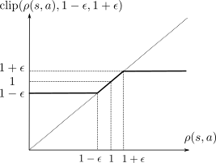
PPO: Proximal Policy Optimization
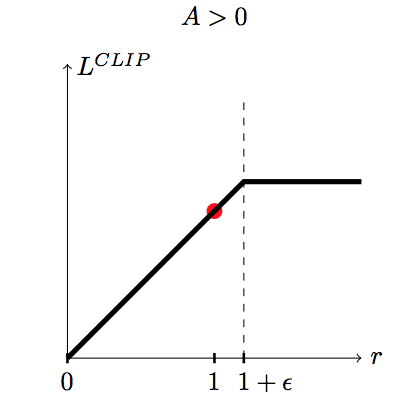
If the advantage \(A^{\pi_{\theta_\text{old}}}(s, a)\) is positive (better action than usual) and:
the IS is higher than \(1+\epsilon\), we use \((1+\epsilon) \, A^{\pi_{\theta_\text{old}}}(s, a)\).
otherwise, we use \(\rho(s, a) \, A^{\pi_{\theta_\text{old}}}(s, a)\).
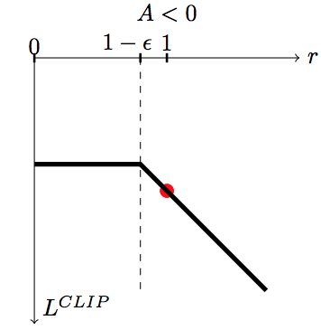
If the advantage \(A^{\pi_{\theta_\text{old}}}(s, a)\) is negative (worse action than usual) and:
the IS is lower than \(1-\epsilon\), we use \((1-\epsilon) \, A^{\pi_{\theta_\text{old}}}(s, a)\).
otherwise, we use \(\rho(s, a) \, A^{\pi_{\theta_\text{old}}}(s, a)\).
PPO: Proximal Policy Optimization
This avoids changing too much the policy between two updates:
Good actions (\(A^{\pi_{\theta_\text{old}}}(s, a) > 0\)) do not become much more likely than before.
Bad actions (\(A^{\pi_{\theta_\text{old}}}(s, a) < 0\)) do not become much less likely than before.
PPO: Proximal Policy Optimization
- The PPO clipped objective ensures than the importance sampling weight stays around one, so the new policy is not very different from the old one. It can learn from single transitions.
\[\mathcal{L}(\theta) = \mathbb{E}_{s \sim \rho_{\theta_\text{old}}, a \sim \pi_{\theta_\text{old}}} [\min(\rho(s, a) \, A^{\pi_{\theta_\text{old}}}(s, a), \text{clip}(\rho(s, a), 1-\epsilon, 1+\epsilon) \, A^{\pi_{\theta_\text{old}}}(s, a))]\]
- The advantage of an action can be learned using any advantage estimator, for example the n-step advantage:
\[A^{\pi_{\theta_\text{old}}}(s_t, a_t) = \sum_{k=0}^{n-1} \gamma^{k} \, r_{t+k+1} + \gamma^n \, V_\varphi(s_{t+n}) - V_\varphi(s_{t})\]
Most implementations use Generalized Advantage Estimation (GAE, Schulman et al., 2015).
PPO is therefore an actor-critic method (as TRPO).
PPO is on-policy: it collects samples using distributed learning (as A3C) and then applies several updates to the actor and critic.
PPO: Proximal Policy Optimization
Initialize an actor \(\pi_\theta\) and a critic \(V_\varphi\) with random weights.
while not converged :
for \(N\) workers in parallel:
Collect \(T\) transitions using \(\pi_{\theta}\).
Compute the advantage \(A_\varphi(s, a)\) of each transition using the critic \(V_\varphi\).
for \(K\) epochs:
Sample \(M\) transitions \(\mathcal{D}\) from the ones previously collected.
Train the actor to maximize the clipped surrogate objective.
\[\mathcal{L}(\theta) = \mathbb{E}_{s, a \sim \mathcal{D}} [\min(\rho(s, a) \, A_\varphi(s, a), \text{clip}(\rho(s, a), 1-\epsilon, 1+\epsilon) \, A_\varphi(s, a))]\]
- Train the critic to minimize the advantage. \[\mathcal{L}(\varphi) = \mathbb{E}_{s, a \sim \mathcal{D}} [(A_\varphi(s, a))^2]\]
PPO: Proximal Policy Optimization
PPO is an on-policy actor-critic PG algorithm, using distributed learning.
Clipping the importance sampling weight allows to avoid policy collapse, by staying in the trust region (the policy does not change much between two updates).
The monotonic improvement guarantee is very important: the network will always find a (local) maximum of the returns.
PPO is much less sensible to hyperparameters than DDPG (brittleness): works often out of the box with default settings.
It does not necessitate complex optimization procedures like TRPO: first-order methods such as SGD work (easy to implement).
The actor and the critic can share weights (unlike TRPO), allowing to work with pixel-based inputs, convolutional or recurrent layers.
It can use discrete or continuous action spaces, although it is most efficient in the continuous case. Go-to method for robotics.
Drawback: not very sample efficient.
PPO : Mujoco control
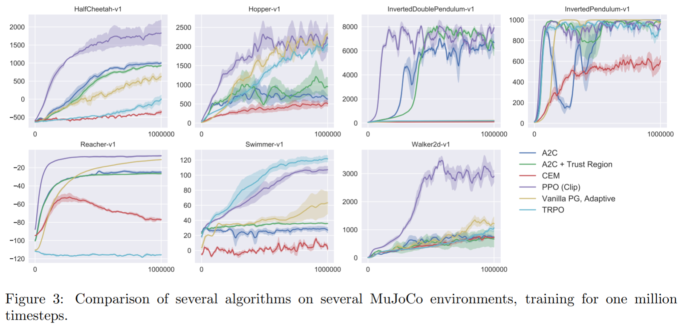
PPO : Parkour
{{< youtube faDKMMwOS2Q >}}Check more robotic videos at: https://openai.com/blog/openai-baselines-ppo/
PPO: dexterity learning
{{< youtube jwSbzNHGflM >}}PPO: Fine-tuning and alignment of ChatGPT

3 - OpenAI Five: Dota 2
{{< youtube eHipy_j29Xw >}}Why is Dota 2 hard?
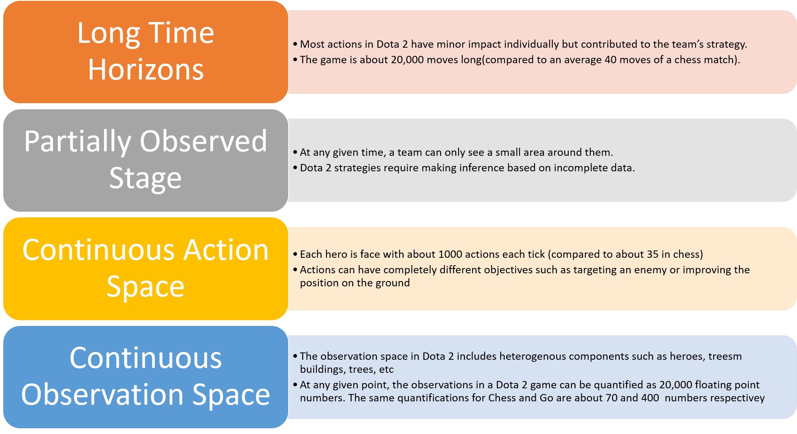
| Feature | Chess | Go | Dota 2 |
|---|---|---|---|
| Total number of moves | 40 | 150 | 20000 |
| Number of possible actions | 35 | 250 | 1000 |
| Number of inputs | 70 | 400 | 20000 |
OpenAI Five: Dota 2
- OpenAI Five is composed of 5 PPO networks (one per player), using 128,000 CPUs and 256 V100 GPUs.
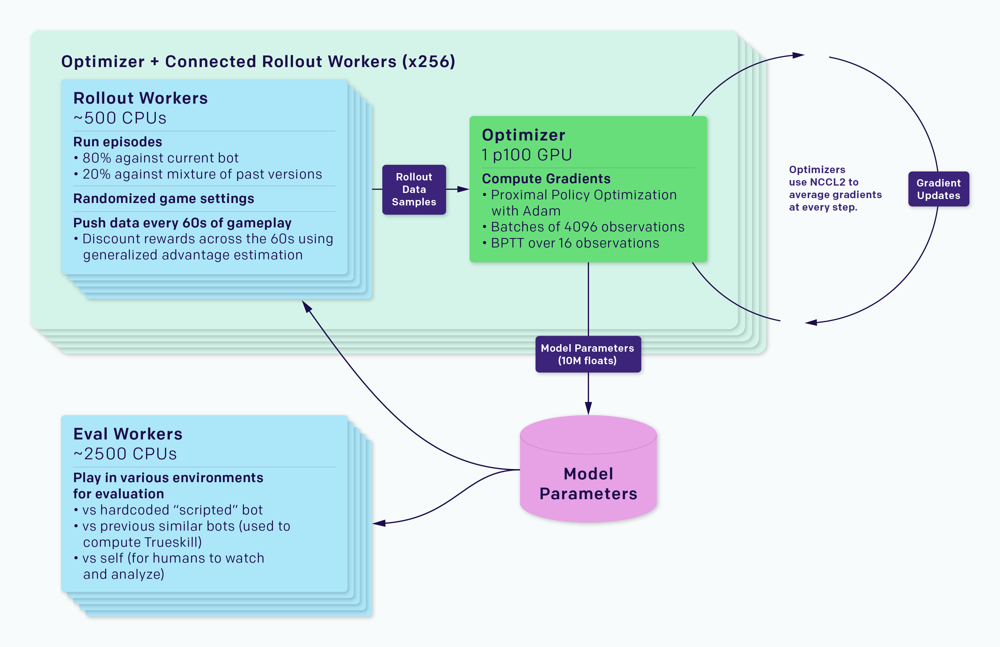
OpenAI Five: Dota 2
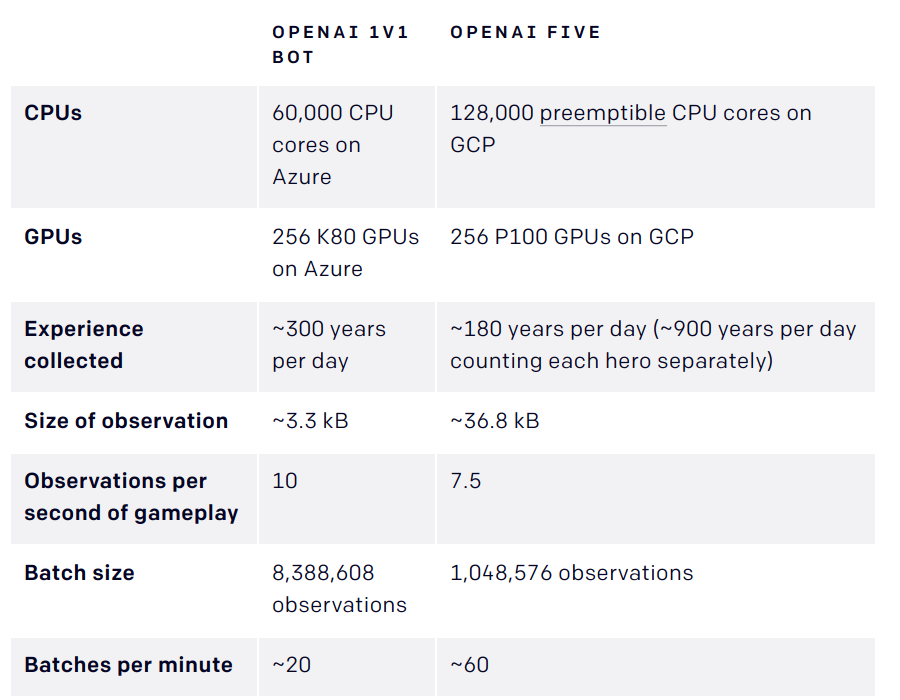
OpenAI Five: Dota 2
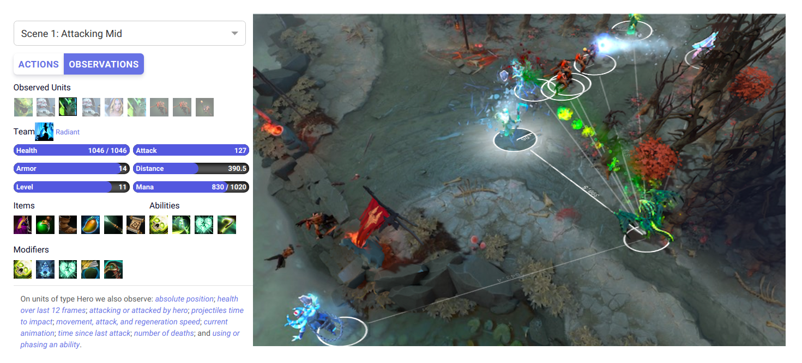
OpenAI Five: Dota 2
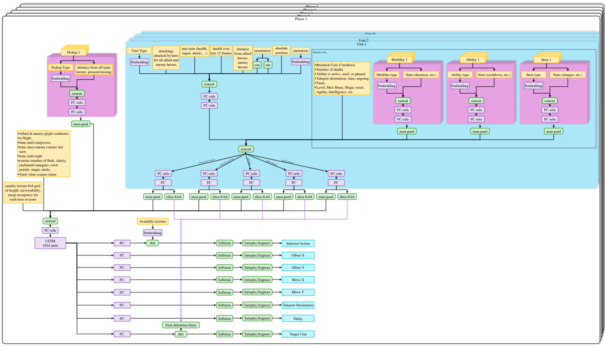
https://d4mucfpksywv.cloudfront.net/research-covers/openai-five/network-architecture.pdf
OpenAI Five: Dota 2
The agents are trained by self-play. Each worker plays against:
the current version of the network 80% of the time.
an older version of the network 20% of the time.
Reward is hand-designed using human heuristics:
- net worth, kills, deaths, assists, last hits…
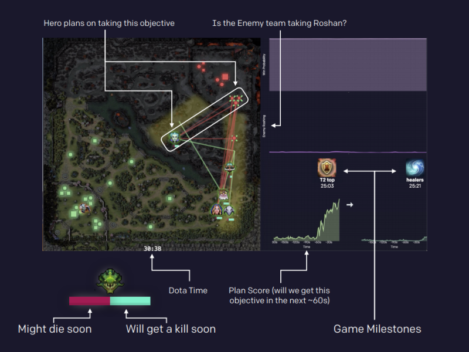
The discount factor \(\gamma\) is annealed from 0.998 (valuing future rewards with a half-life of 46 seconds) to 0.9997 (valuing future rewards with a half-life of five minutes).
Coordinating all the resources (CPU, GPU) is actually the main difficulty:
- Kubernetes, Azure, and GCP backends for Rapid, TensorBoard, Sentry and Grafana for monitoring…
1 - TRPO: Trust Region Policy Optimization (skipped)
TRPO: Trust Region Policy Optimization
- We want to maximize the expected return of a policy \(\pi_\theta\), which is equivalent to the Q-value of every state-action pair visited by the policy:
\[\mathcal{J}(\theta) = \mathbb{E}_{s \sim \rho_\theta, a \sim \pi_\theta} [Q^{\pi_\theta}(s, a)]\]
Let’s note \(\theta_\text{old}\) the current value of the parameters of the policy \(\pi_{\theta_\text{old}}\).
@Kakade2002 have shown that the expected return of a policy \(\pi_\theta\) is linked to the expected return of the current policy \(\pi_{\theta_\text{old}}\) with:
\[\mathcal{J}(\theta) = \mathcal{J}(\theta_\text{old}) + \mathbb{E}_{s \sim \rho_\theta, a \sim \pi_\theta} [A^{\pi_{\theta_\text{old}}}(s, a)]\]
where
\[A^{\pi_{\theta_\text{old}}}(s, a) = Q_\theta(s, a) - Q_{\theta_\text{old}}(s, a)\]
is the advantage of taking the action \((s, a)\) and thereafter following \(\pi_\theta\), compared to following the current policy \(\pi_{\theta_\text{old}}\).
- The return under any policy \(\theta\) is equal to the return under \(\theta_\text{old}\), plus how the newly chosen actions in the rest of the trajectory improves (or worsens) the returns.
TRPO: Trust Region Policy Optimization
- If we can estimate the advantages and maximize them, we can find a new policy \(\pi_\theta\) with a higher return than the current one.
\[\mathcal{L}(\theta) = \mathbb{E}_{s \sim \rho_\theta, a \sim \pi_\theta} [A^{\pi_{\theta_\text{old}}}(s, a)]\]
- By definition, \(\mathcal{L}(\theta_\text{old}) = 0\), so the policy maximizing \(\mathcal{L}(\theta)\) has positive advantages and is better than \(\pi_{\theta_\text{old}}\).
\[\theta_\text{new} = \text{argmax}_\theta \; \mathcal{L}(\theta) \; \Rightarrow \; \mathcal{J}(\theta_\text{new}) \geq \mathcal{J}(\theta_\text{old})\]
Maximizing the advantages ensures monotonic improvement: the new policy is always better than the previous one. Policy collapse is not possible!
The problem is that we have to take samples \((s, a)\) from \(\pi_\theta\): we do not know it yet, as it is what we search. The only policy at our disposal to estimate the advantages is the current policy \(\pi_{\theta_\text{old}}\).
We could use importance sampling to sample from \(\pi_{\theta_\text{old}}\), but it would introduce a lot of variance:
\[\mathcal{L}(\theta) = \mathbb{E}_{s \sim \rho_{\theta_\text{old}}, a \sim \pi_{\theta_\text{old}}} [\frac{\pi_{\theta}(s, a)}{\pi_{\theta_\text{old}}(s, a)} \, A^{\pi_{\theta_\text{old}}}(s, a)]\]
TRPO: Trust Region Policy Optimization
In TRPO, we are adding a constraint instead:
the new policy \(\pi_{\theta_\text{new}}\) should not be (very) different from \(\pi_{\theta_\text{old}}\).
the importance sampling weight \(\frac{\pi_{\theta_\text{new}}(s, a)}{\pi_{\theta_\text{old}}(s, a)}\) will not be very different from 1, so we can omit it.
Let’s define a new objective function \(\mathcal{J}_{\theta_\text{old}}(\theta)\):
\[\mathcal{J}_{\theta_\text{old}}(\theta) = \mathcal{J}(\theta_\text{old}) + \mathbb{E}_{s \sim \rho_{\theta_\text{old}}, a \sim \pi_{\theta}} [A^{\pi_{\theta_\text{old}}}(s, a)]\]
The only difference with \(\mathcal{J}(\theta)\) is that the visited states \(s\) are now sampled by the current policy \(\pi_{\theta_\text{old}}\).
This makes the expectation tractable: we know how to visit the states, but we compute the advantage of actions taken by the new policy in those states.
TRPO: Trust Region Policy Optimization
- Previous objective function:
\[\mathcal{J}(\theta) = \mathcal{J}(\theta_\text{old}) + \mathbb{E}_{s \sim \rho_\theta, a \sim \pi_\theta} [A^{\pi_{\theta_\text{old}}}(s, a)]\]
- New objective function:
\[\mathcal{J}_{\theta_\text{old}}(\theta) = \mathcal{J}(\theta_\text{old}) + \mathbb{E}_{s \sim \rho_{\theta_\text{old}}, a \sim \pi_{\theta}} [A^{\pi_{\theta_\text{old}}}(s, a)]\]
- It is “easy” to observe that the new objective function has the same value in \(\theta_\text{old}\):
\[\mathcal{J}_{\theta_\text{old}}(\theta_\text{old}) = \mathcal{J}(\theta_\text{old})\]
and that its gradient w.r.t. \(\theta\) is the same in \(\theta_\text{old}\):
\[\nabla_\theta \mathcal{J}_{\theta_\text{old}}(\theta)|_{\theta = \theta_\text{old}} = \nabla_\theta \, \mathcal{J}(\theta)|_{\theta = \theta_\text{old}}\]
At least locally, maximizing \(\mathcal{J}_{\theta_\text{old}}(\theta)\) is exactly the same as maximizing \(\mathcal{J}(\theta)\).
\(\mathcal{J}_{\theta_\text{old}}(\theta)\) is called a surrogate objective function: it is not what we want to maximize, but it leads to the same result locally.
TRPO: Trust Region Policy Optimization
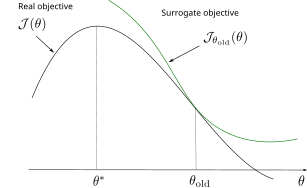
TRPO: Trust Region Policy Optimization
How big a step can we take when maximizing \(\mathcal{J}_{\theta_\text{old}}(\theta)\)? \(\pi_\theta\) and \(\pi_{\theta_\text{old}}\) must be close from each other for the approximation to stand.
The first variant explored in the TRPO paper is a constrained optimization approach (Lagrange optimization):
\[ \max_\theta \mathcal{J}_{\theta_\text{old}}(\theta) = \mathcal{J}(\theta_\text{old}) + \mathbb{E}_{s \sim \rho_{\theta_\text{old}}, a \sim \pi_{\theta}} [A^{\pi_{\theta_\text{old}}}(s, a)] \]
\[ \text{such that:} \; D_\text{KL} (\pi_{\theta_\text{old}}||\pi_\theta) \leq \delta \]
The KL divergence between the distributions \(\pi_{\theta_\text{old}}\) and \(\pi_\theta\) must be below a threshold \(\delta\).
This version of TRPO uses a hard constraint:
- We search for a policy \(\pi_\theta\) that maximizes the expected return while staying within the trust region around \(\pi_{\theta_\text{old}}\).
TRPO: Trust Region Policy Optimization
- The second approach regularizes the objective function with the KL divergence:
\[ \max_\theta \mathcal{L}(\theta) = \mathcal{J}_{\theta_\text{old}}(\theta) - C \, D_\text{KL} (\pi_{\theta_\text{old}}||\pi_\theta) \]
where \(C\) is a regularization parameter controlling the importance of the soft constraint.
This surrogate objective function is a lower bound of the initial objective \(\mathcal{J}(\theta)\):
- The two objectives have the same value in \(\theta_\text{old}\):
\[\mathcal{L}(\theta_\text{old}) = \mathcal{J}_{\theta_\text{old}}(\theta_\text{old}) - C \, D_{KL}(\pi_{\theta_\text{old}} || \pi_{\theta_\text{old}}) = \mathcal{J}(\theta_\text{old})\]
- Their gradient w.r.t \(\theta\) are the same in \(\theta_\text{old}\):
\[\nabla_\theta \mathcal{L}(\theta)|_{\theta = \theta_\text{old}} = \nabla_\theta \mathcal{J}(\theta)|_{\theta = \theta_\text{old}}\]
- The surrogate objective is always smaller than the real objective, as the KL divergence is positive:
\[\mathcal{J}(\theta) \geq \mathcal{J}_{\theta_\text{old}}(\theta) - C \, D_{KL}(\pi_{\theta_\text{old}} || \pi_\theta)\]
TRPO: Trust Region Policy Optimization
TRPO: Trust Region Policy Optimization
- The policy \(\pi_\theta\) maximizing the surrogate objective \(\mathcal{L}(\theta) = \mathcal{J}_{\theta_\text{old}}(\theta) - C \, D_\text{KL} (\pi_{\theta_\text{old}}||\pi_\theta)\):
- has a higher expected return than \(\pi_{\theta_\text{old}}\):
\[\mathcal{J}(\theta) > \mathcal{J}(\theta_\text{old})\]
- is very close to \(\pi_{\theta_\text{old}}\):
\[D_\text{KL} (\pi_{\theta_\text{old}}||\pi_\theta) \approx 0\]
- but the parameters \(\theta\) are much closer to the optimal parameters \(\theta^*\).
The version with a soft constraint necessitates a prohibitively small learning rate in practice.
The implementation of TRPO uses the hard constraint with Lagrange optimization, what necessitates using conjugate gradients optimization, the Fisher Information matrix and natural gradients: very complex to implement…
However, there is a monotonic improvement guarantee: the successive policies can only get better over time, no policy collapse! This is the major advantage of TRPO compared to the other methods: it always works, although very slowly.